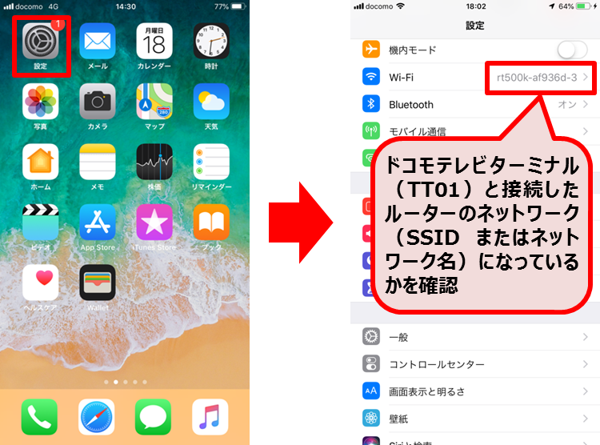

ドコモテレビターミナル（TT01）が見つからない場合は、ドコモテレビターミナル（TT01）の電源がONまたは、待機状態になっていることを確認の上、スマートフォン・タブレットがドコモテレビターミナル（TT01）と同一のネットワークにWi-Fi接続されているか確認してください。
◎iPhone、iPadをご利用の方
ホームから「設定＞Wi-Fi」でWi-Fiがオン、ネットワーク名がドコモテレビターミナル（TT01）と接続したルーターのネットワーク（SSIDまたはネットワーク名）になっているかご確認ください。

Wi-Fiがオフになっている場合、「オフ」をタップし、
①「ネットワークを選択」に表示されるドコモテレビターミナル（TT01）と接続したルーターのネットワーク（SSIDまたはネットワーク名）を選択し、パスワードを入力して接続
②選択したネットワークが表示され、チェックマークがついていることを確認
③画面上部が無線マークになっていることを確認